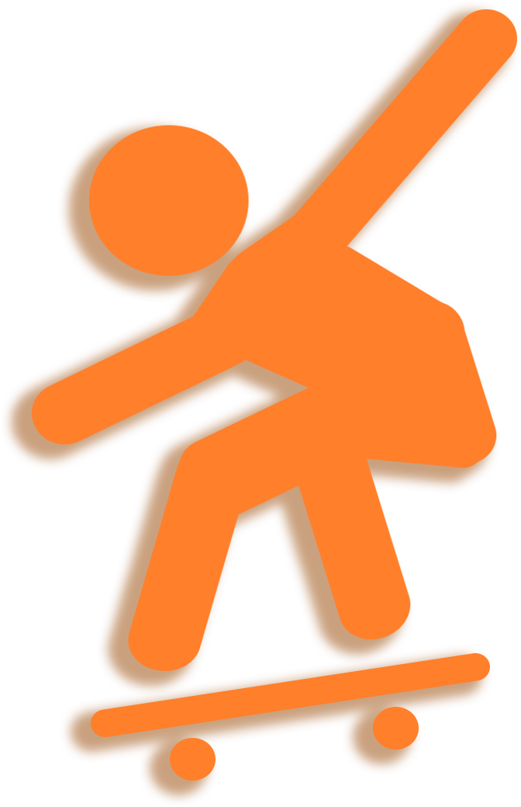
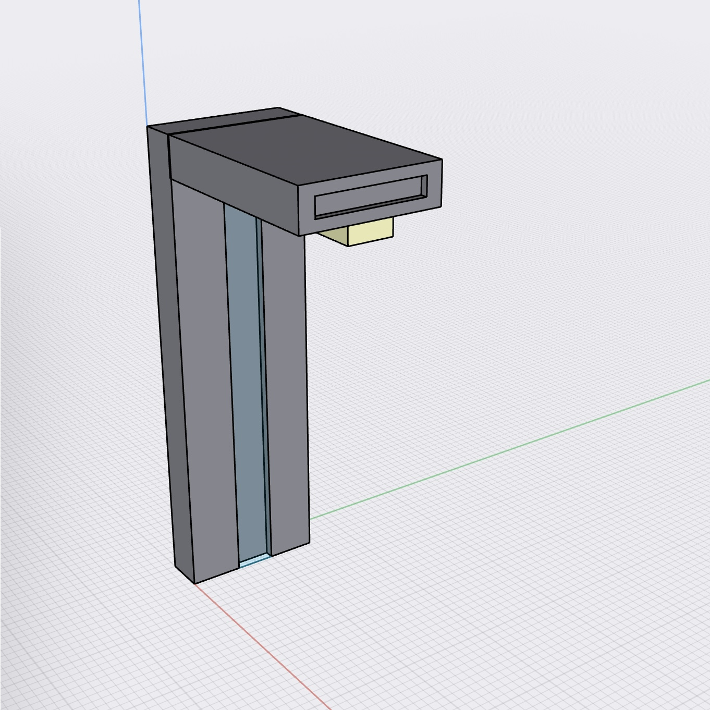
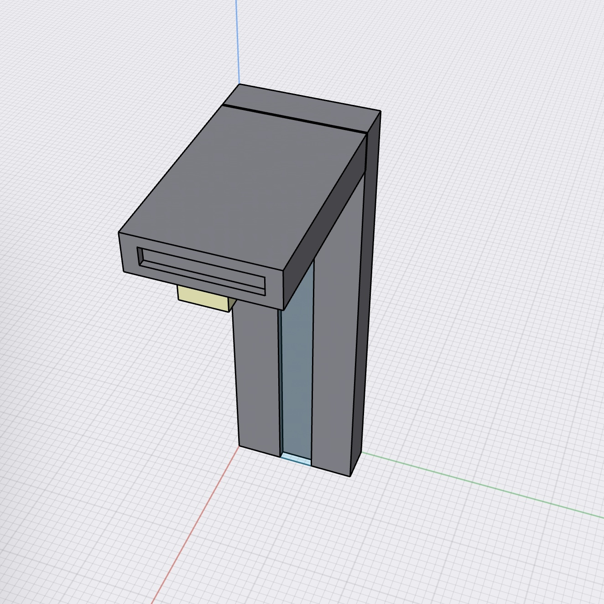
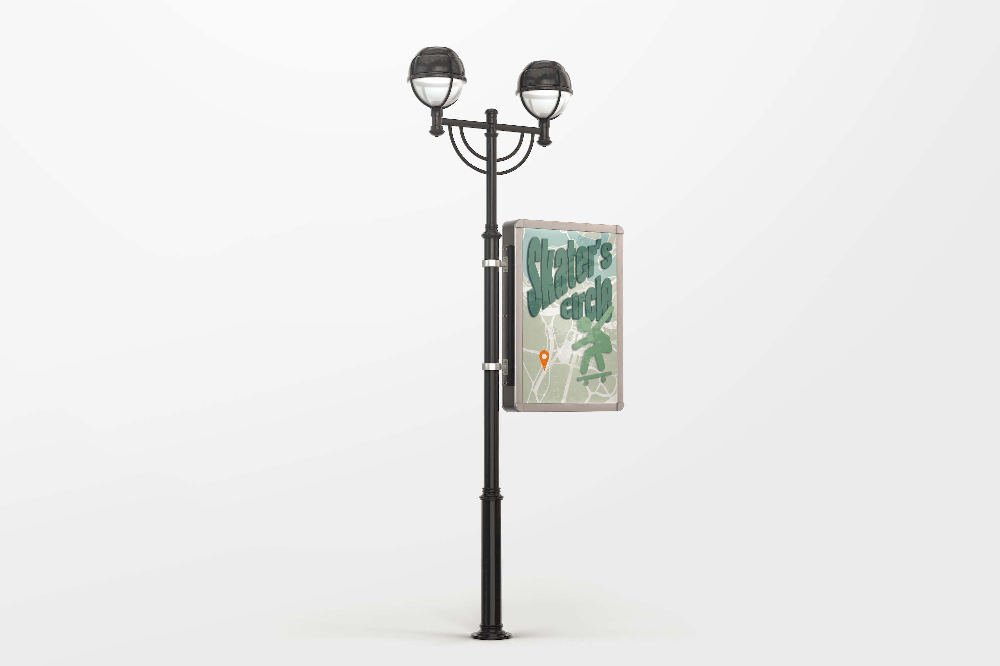

<!DOCTYPE html>

<html lang="en" dir="ltr">
  <head>
    <meta charset="utf-8" />
    <title>Central park interaction</title>
    <link rel="stylesheet" href="style-design.css" />
  </head>
  <link
    href="https://fonts.googleapis.com/css2?family=Commissioner:wght@100;200;300;400;500;600;700;800;900&display=swap"
    rel="stylesheet"
  />

  <link rel="stylesheet" href="https://www.w3schools.com/w3css/4/w3.css">
</html>

<body>


<!-- <center><p class="Direction">Direction Interaction</p></center> -->
  <!--map area-->
  

 <!--flying skater -->
 <div class="flier"></div>
 <div class="flier2"></div>


 <!--information-->
<div class="containerone">
<div class="house">
  <br/>
  <br/>
  
  <ul class="nav">
    <li><a href="/index.html">Infor</a></li>
    <li><a href="/design.html">Design</a></li>

  </ul>
  <br/>
  

  <p class="motion"> 
    &nbsp&nbsp&nbsp&nbsp&nbsp&nbsp&nbsp&nbsp
     <span class="partone">Part1.</span>
     Motion Sensor Sound Navigation
     <br/>
     &nbsp&nbsp&nbsp&nbsp&nbsp&nbsp&nbsp&nbsp
     &nbsp&nbsp&nbsp&nbsp&nbsp&nbsp&nbsp&nbsp
     <br/>
     <div class="SkateLoaction"></div>
<p class="informationtoskate">Motion Sensor Sound Navigation will be placed in 
  various sections of the road leading to the Skater's Circle
   to help people guide the way to there. 
   As shown in the picture, the orange arrows 
   are the various road sections.
   When people walk closer and closer to the Skater's Circle,
    this device will send out the sound of skateboards and 
    ground friction. The closer you walk to the park, 
    the louder the sound from the device. 
    When people slowly walk away from the park, 
    the sound of the device will also become smaller and smaller.
</p>

<p class="sketchone">2D Sketch</p>
<center><div class="sketchonepicture"></div></center>

<p class="sketchtwo">3D Sketch</p>
<!-- two pictures side by side-->
<div class="column">
</div>
<div class="columns">
</div>

<center><div class="sketchvideo"><video autoplay loop muted width="70%">
  <source src="3DSketch.mp4" controls>
</video></div>
</center>

<br/>
<br/>

<center><p class="finalproject">
   - Motion Sensor Sound Navigation - 
  <br/> <br/>

    <video width="70%" controls>
    <source src="WalkinAction.mp4" controls>
    </video>
 <br/> <br/> <br/><br/> <br/>

 <center><p class="walkinvideo">&nbsp&nbsp&nbsp&nbsp
  &nbsp&nbsp&nbsp&nbsp&nbsp&nbsp&nbsp&nbsp
  &nbsp&nbsp&nbsp&nbsp&nbsp
 Walk into the Skater's Circle</p></center>
</p>
  
<br/> <br/> <br/><br/> <br/><br/>
<br/> <br/> <br/><br/> <br/><br/> <br/>
<br/> <br/> <br/><br/> <br/><br/> <br/>
<br/> <br/> <br/><br/> <br/><br/> <br/>
<br/> <br/> <br/><br/> <br/><br/> <br/>
<br/> <br/><br/> <br/><br/>

<video width="70%" controls> <br/> <br/> <br/><br/> <br/><br/> <br/>
      <source src="WalkoutAction.mp4" controls> <br/> <br/> <br/><br/> <br/><br/>
      </video>
 <br/> <br/> <br/> <br/><br/> <br/><br/> <br/>
<center> <p class="walkoutvideo">&nbsp&nbsp
  Walk out from the Skater's Circle</p></center>
    

  </p></center>

  <p class="street">
    &nbsp&nbsp&nbsp&nbsp&nbsp&nbsp&nbsp&nbsp
     <span class="partone">Part2.</span>
    Street Banner
    <br/>
    &nbsp&nbsp&nbsp&nbsp&nbsp&nbsp&nbsp&nbsp
    &nbsp&nbsp&nbsp&nbsp&nbsp&nbsp&nbsp&nbsp
  </p>

  <p class="streetbannertext">
    Street Banner will be placed at the outside entrance 
    of Central Park to easily guide people to the Skater's Circle.

  </p>

  <span class="skateparkpic">
    <div class="w3-content w3-section" style="max-width:600px">
    
      
      
      
     
    </div>
    
    <script>
    var myIndex = 0;
    carousel();
    
    function carousel() {
      var i;
      var x = document.getElementsByClassName("mySlides");
      for (i = 0; i < x.length; i++) {
        x[i].style.display = "none";  
      }
      myIndex++;
      if (myIndex > x.length) {myIndex = 1}    
      x[myIndex-1].style.display = "block";  
      setTimeout(carousel, 9000);    
    }
    </script>
    </span>
  


</div>
</div>

<br/>
<br/>
<br/>

</body>
